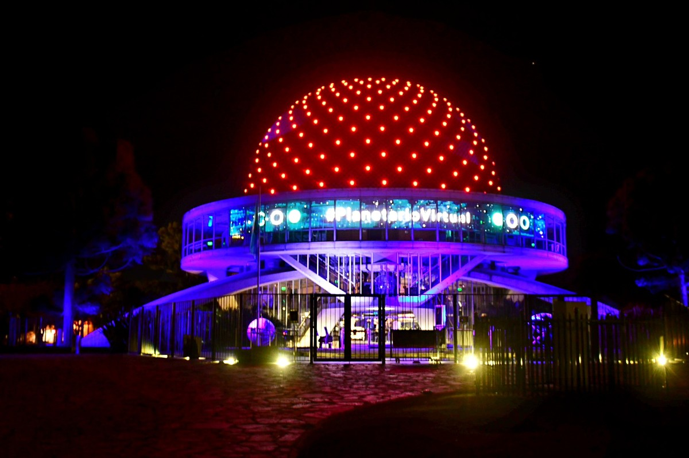

.gif
)
Explora el espacio desde caba
Ameri es una empresa de astronomia e astroturismo dedicada a brindar experiencias inolvidables de exploracion espacial en la ciudad de buenos aires a traves de actividades guiadas y el uso de telescopios de alta precision, nuestros expertos observadores llevan a los participantes a descubrir misterios del universo, observando planetas, estrellas y constelaciones desde una perspectiva en el corazon dela ciudad.
Tipos de telescopios
Telescopio reflectores
En su versión más tradicional y popular, estos modelos, también llamados “newtonianos” (por su inventor, el genial Isaac Newton), tienen un espejo primario (de superficie ligeramente cóncava) que colecta la luz de los astros, y que se ubica en la parte inferior del tubo, y un espejo secundario (mucho más chico, plano, y situado cerca de la parte frontal del telescopio, con una inclinación de 45º). En los reflectores, observamos por la parte delantera del instrumento.
Telescopios refractores
tienen una lente frontal (el “objetivo”) compuesta, que “refracta” la luz y la concentra en un foco. Allí, el ocular , recibe la luz, y forma la imagen. En los telescopios refractores, observamos por la parte trasera del tubo.
Monturas
Ecuatorial
son monturas más grandes, pesadas y complejas. Su manejo requiere de mayores conocimientos, entre otras cosas, porque deben estar bien niveladas y alineadas: su “eje polar” debe apuntar a uno de los polos celestes (norte o sur, según la latitud geográfica del observador). Algunas monturas ecuatoriales son de uso manual (con movimientos finos solamente), mientras que otras son motorizadas. Dado que, con sus movimientos, estos dispositivos contrarrestan la rotación terrestre, y permiten seguir a los astros en sus trayectorias celestes, son herramientas prácticamente imprescindibles para la astrofotografía.
Dobsoniana
Dobsonianas: son una variante de las acimutales, y se basan en un diseño de “cajoncito” giratorio, donde va encajado el telescopio. Son monturas sencillas, relativamente económicas, y al mismo tiempo muy sólidas. Soportan perfectamente a instrumentos medianos y grandes (de 15 cm. de diámetro para arriba).
Acimutal
PLANETARIO
Descubre los secretos del cosmos en nuestro moderno planetario, un espacio diseñado para transportarte más allá de las fronteras de la Tierra. Con tecnología de proyección de última generación y una cúpula envolvente de 360°, vivirás una experiencia inmersiva que te llevará a explorar galaxias lejanas, constelaciones, nebulosas y los misterios más fascinantes del universo. Nuestros espectáculos astronómicos combinan ciencia, arte y entretenimiento, guiados por expertos apasionados que te explicarán el funcionamiento del cosmos de manera clara y emocionante. Desde viajes virtuales por los planetas del Sistema Solar hasta observaciones detalladas de eventos cósmicos, cada presentación es única y educativa. Ya seas un amante de la astronomía o simplemente alguien curioso por mirar las estrellas, el planetario es el lugar perfecto para despertar tu fascinación por el espacio. ¡Únete a nosotros y experimenta un viaje que te conectará con el infinito!
INDIVIDUAL
Precio por persona
GRUPOS
Hasta 5 personas
EXCLUSIVO
Personal o de grupo